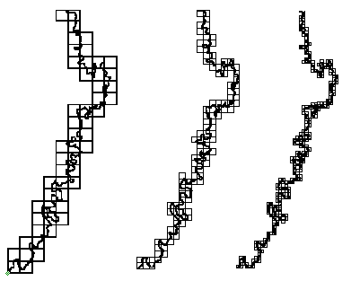
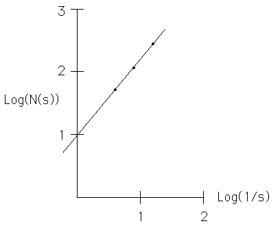

| Box-counting is a familiar approach to
computing dimensions, applicable to rivers with the usual cautions. Below we see a
trace of part of the Mississippi river, covered by a sequence of smaller boxes. Notice that
smaller boxes pick up more detail of the river. Denoting by |
| N(s) the number of
boxes of side length s needed to cover the river trace, |
| we expect |
| N(s) = k⋅(1/s)D. |
| Plotting Log(N(s)) versus Log(1/s)
should give points lying approximately on a straight line of slope D. |
|  |
| Here is a table of the data in these three pictures. |
| side length s | number of boxes N(s) |
| 1/4 | 52 |
| 1/8 | 115 |
| 1/16 | 275 |
|
| The plot
of Log(N(s) vs Log(1/s) shows the points lie very nicely along a straight
line of slope 1.2. So at least in this range of scales, the data suggest this part of the Mississippi
River has dimension D ≈ 1.2. |
|  |
| This illustrates the principal and is not meant to be a serious computation of dimension. A much
higher resolution picture and a larger range of box sizes, extending to a much smaller scale, would be
needed before a believable result could be obtained. |